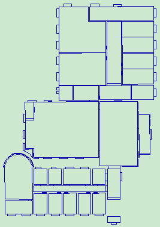
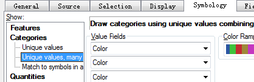
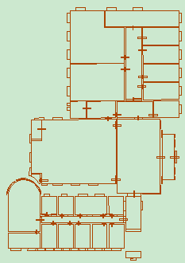
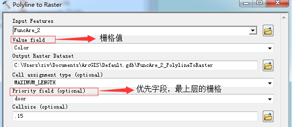
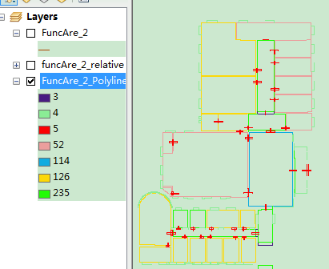
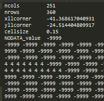
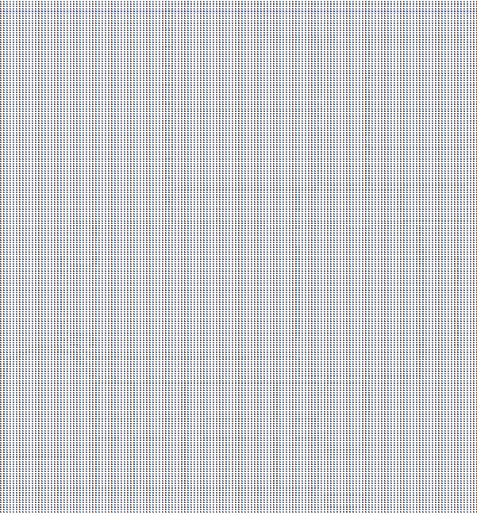

查看原始图像
首先使用ArcGIS打开原始shp矢量图，

重分类
然后将 shp 线文件进行重分类，以color为标准进行空间对象的分类，若以其他属性字段为分类依据，则将该属性设置为Value Fields。

更新门数据
由于shp图中门的位置不一定能够保证连通性，需要进行二次处理，处理效果如下图所示。

矢量转栅格
在保证了门的连通性之后，在更新门后的shp图中新建一个door字段，让color=5（也就是门）的door属性等于5，并将door设置为优先字段，这样做
可以让门的栅格图位于最上层，覆盖其他类型。
然后在ArcToolBox——Conversion Tools——To Raster——polygon To Raster工具中进行矢量转栅格。

转换后的效果如下图所示。

栅格转ASCII文件
在成功转为栅格图之后，在ArcToolBox——Conversion Tools——From Raster——Raster To ASCII中将栅格图转换为ASCII文件，如下图所示。

其中-9999为地图中没有定义的栅格点，4为shp图中color=4的栅格点（窗户），使用notepad/sublime进行文本替换，从数字从大到小替换，将-9999替换为1，5（门）也替换为1，表示可以通行；其他数字替换为0，表示不可通行。最后结果在notepad中打开如下图所示：

相对坐标到栅格行列号的转换
编写函数IndexToLonLat()和LonLatToIndex ()，在“独立代码段/相对坐标与栅格行列号转换.html”中实现。主要用来在相对坐标与栅格行列号之间的转换。